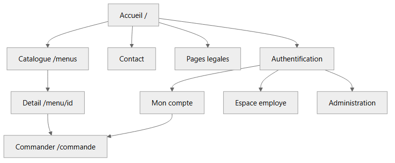
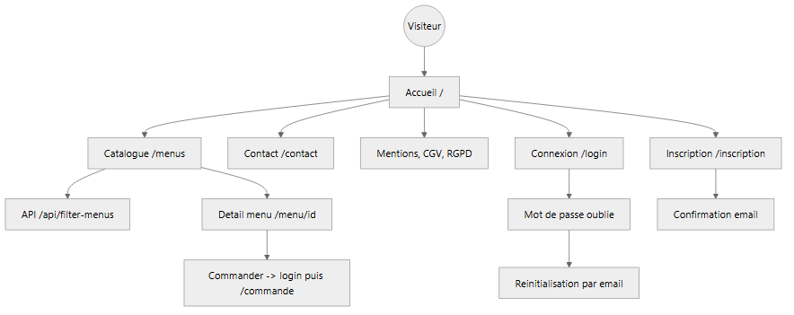
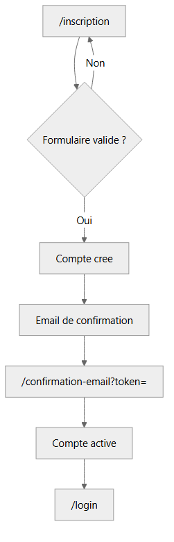
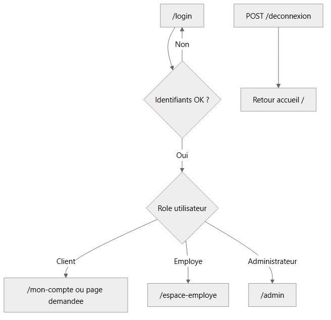
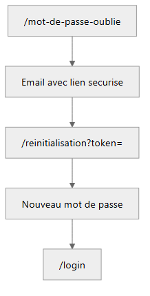
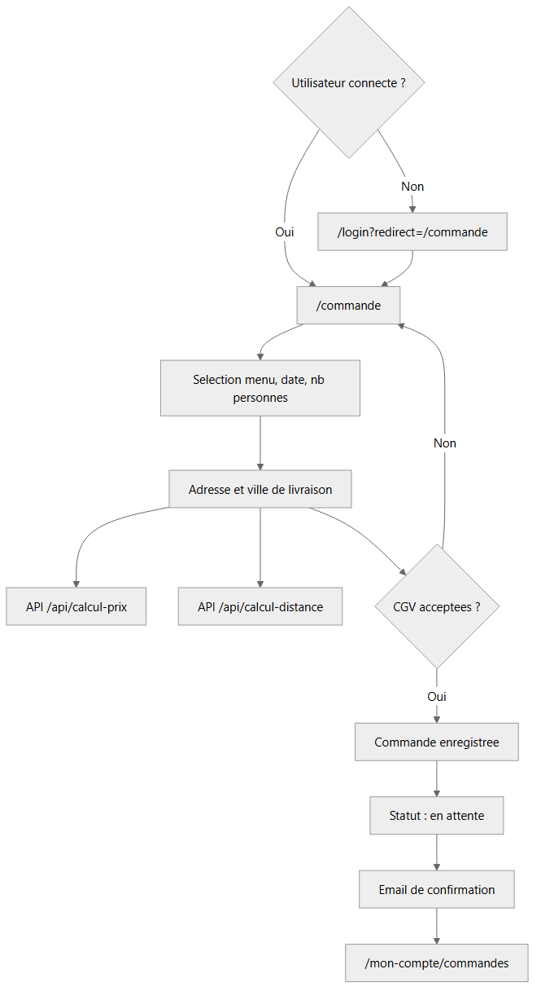
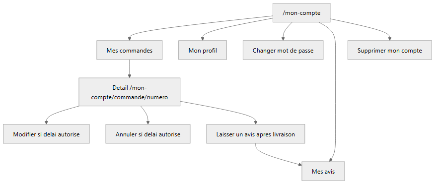
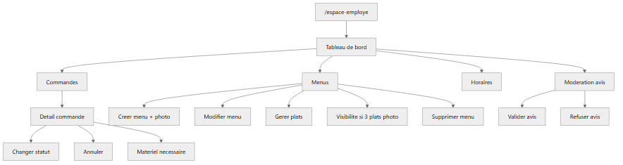
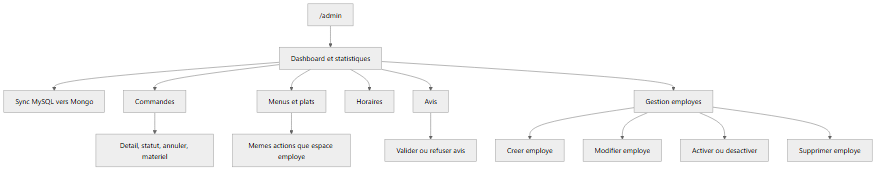
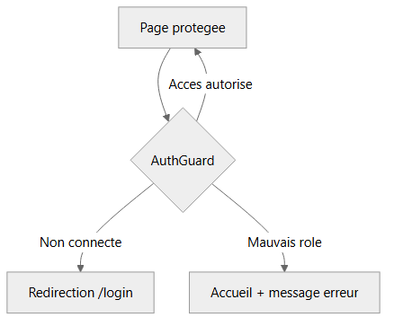

Vite et Gourmand — Cartographie des parcours utilisateur, basée sur src/Router.php et les contrôleurs.
| Rôle | Session | Espace principal | Accès restreint |
|---|---|---|---|
| Visiteur | Non connecté | Pages publiques | Commande, mon compte |
| Client | role = utilisateur | /mon-compte | Espace employé, admin |
| Employé | role = employe | /espace-employe | Admin exclusif |
| Administrateur | role = administrateur | /admin | Gestion employés, stats |
L'administrateur accède aussi aux fonctionnalités employé (menus, commandes, avis, horaires).

Navigation sans connexion : découverte des menus, contact, pages légales et accès à l'authentification.





Règles métier : connexion obligatoire ; calcul prix et distance via API ; modification / annulation selon statut et délai (config/commande.php).

Règles métier : avis possible après prestation livrée ; suppression de compte depuis le profil.
Accessible aux rôles employé et administrateur.

visible = 0)
Stats admin : MongoDB Atlas si disponible, sinon MySQL ; bouton de synchronisation MySQL → Mongo (ECF).
| Route | Usage |
|---|---|
| GET /api/filter-menus | Filtrage catalogue (régime, prix, personnes…) |
| POST /api/calcul-prix | Calcul tarif commande |
| POST /api/calcul-distance | Distance livraison depuis Bordeaux |

| Zone | Garde |
|---|---|
| /commande, /mon-compte/* | Connexion client |
| /espace-employe/* | Rôle employé ou admin |
| /admin/* | Rôle administrateur uniquement |